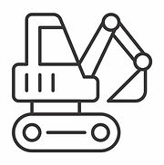
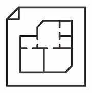
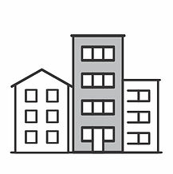
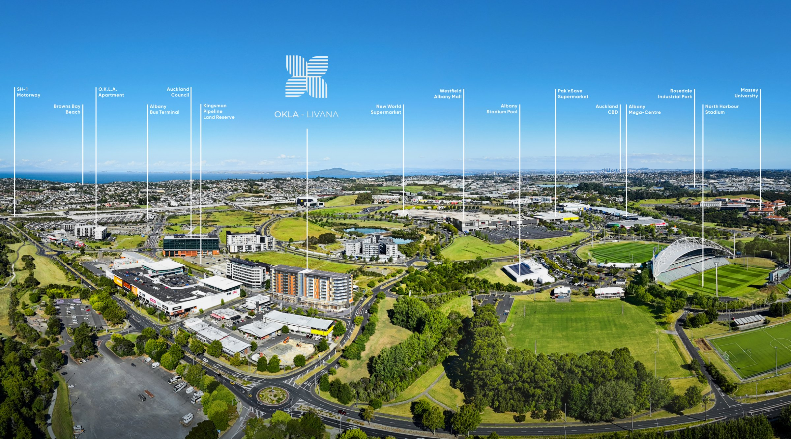

00Executive Summary
Investment Highlights
Positioned in the heart of Albany – Auckland’s premier growth precinct – the OKLA LIVANA Build-to-Rent development brings together planning certainty, institutional-grade design, and long-term rental resilience. With consented status, experienced delivery partners, and a future-focused operating model, it presents a rare opportunity to secure a stabilised BTR asset in one of New Zealand’s most investable urban corridors.
01
Landmark BTR asset in Auckland with 203 BTR Units + 10 Boutique Retails
02

Positioned in Albany, Auckland’s most dynamic growth centre with strong market demand
03
Led by a proven team of Living-Sector-focused developer and delivery partners
04
Aprox 13,500 m2 BTR design specifically tailored for rental performance and retention
05
Shovel-Ready: fully consented with comprehensive construction ECI
06
Endorsed by government strategy supporting intensified rental housing and streamlined OIO
07

Optional Turnkey delivery by experienced team with full delivery risk managed
08
Attractive projected returns driven by strong rental yield and capital appreciation
09
The only residential class asset that can be invested in and owned by Overseas Investment*
10

Opportunity to secure first asset of O.K.L.A’s BTR pipeline
01Why BTR
Why Invest in
Build-To-Rent (BTR)
Build-To-Rent (BTR)
A resilient, income-generating asset class aligned with evolving living preferences and long-term urban growth.
The Rise of BTR in New Zealand
Build-to-Rent is reshaping the future of rental housing in NZ. Purpose-built and professionally managed, BTR offers residents stability and delivers long-term, secure returns for investors. As housing affordability worsens and rental demand grows, BTR is emerging as a scalable, resilient investment solution.
Stable Income, Institutional Appeal
With long-term leases, low vacancy risk and professional management, BTR assets generate predictable cash flows and deliver attractive risk-adjusted returns. The sector is favoured by institutional and high-net-worth investors seeking exposure to defensive income-generating real estate.
A Sector Supported by Demographics & Policy
New Zealand’s population continues to grow rapidly, especially in urban growth nodes like Albany. More households are renting for longer — by both choice and necessity. Government policy now supports BTR as a key strategy to meet long-term housing needs, creating a favourable investment climate.
Find out more about Build to Rent
Why BTR →
02Invest in Auckland
Invest in Auckland
Auckland faces rising rents and constrained supply—especially in high-growth areas like Albany. Strategically located, OKLA LIVANA Build-to-Rent offers rare access to jobs, retail, transport and lifestyle infrastructure in the city’s most dynamic growth corridor.
Auckland, New Zealand’s largest and most globally connected city, is a prime destination for long-term residential investment. Home to over 1.7 million people—and projected to exceed 2 million by the early 2030s—Auckland represents 34% of the national population and remains the engine of urban growth.
Its diverse economy contributes $13 billion directly through the property sector and over $36 billion in wider impacts. With strong infrastructure, innovation hubs, and policy-backed expansion, Auckland offers investors a stable, future-focused environment for residential asset growth.
Explore why global capital is choosing Auckland
Invest in Auckland →


03Albany: The True Hub
Why BTR in Albany
Albany is one of Auckland’s fastest growing metropolitan centres — a highly strategic, masterplanned precinct combining rapid population growth, superior infrastructure, and a deeply undersupplied rental market.
Auckland’s Investment Focus: Albany
Albany is one of only three Metropolitan Centres identified by Auckland Council for major investment and growth. Already transforming into a high-amenity, self-sustaining urban hub, it offers BTR developments enduring demand and premium positioning.
The Auckland’s Next Generation Growth Engine
Just as Chatswood is to Sydney and Glen Waverley is to Melbourne, Albany is fast emerging as the strategic centre in Auckland, a premium residential and educational hub with growing commercial opportunities. Backed by public and private investment, it is set to lead growth across Auckland’s North Shore for decades to come.
Exceptional Demographic and Economic Fundamentals
Over the past 25 years, apartments on Auckland’s North Shore have achieved a compound annual growth rate of 5.79%—rising to 6.67% when excluding a single outlier project. This performance, drawn from a sample of nearly 300 developments, demonstrates sustained capital appreciation.
A Masterplanned Community Built for Scale
Albany combines top-ranked schools, Massey University, city-scale retail, dining and fitness, all within a walkable urban setting. With direct motorway access and rapid transit links to the CBD, it is one of Auckland’s most connected and self-sufficient metropolitan zones.
Connected Living in a Strategic Transport Hub
Albany is one of Auckland’s most connected metropolitan centres — a future-ready transit hub where fast, reliable transport options are embedded into daily life. For Build-To-Rent, this isn’t just convenient — it’s essential.
01
BTR Needs Transit — Albany Delivers It
Build-to-Rent thrives in high-connectivity locations. Albany offers unmatched access through the Northern Busway, major motorways, and walkable urban design—linking residents to jobs, education, and lifestyle while reducing car dependence.
02
Why Transport Connectivity Matters for BTR
Successful BTR communities attract renters who prioritise access: professionals, students, young urbanites, and newcomers. For them, seamless mobility isn’t a bonus—it’s essential. Transit access is the foundation of BTR demand and retention.
03
Albany’s Transit Credentials
Northern Busway: Direct to CBD in under 25 mins
SH1 & SH18: Regional motorway access
Cycleways & Walkability: Encouraging active transit
Future Upgrades: Government-backed infrastructure pipeline
Park & Ride: One of Auckland’s largest commuter hubs
04
Positioned for the Future of Urban Mobility
As Auckland continues investing in future-focused transport infrastructure, Albany’s role as a regional mobility anchor will only strengthen. For investors, this means alignment with government-backed growth, rising land value, and increased rental performance.
See why Albany is the perfect foundation for BTR success
Discover why mobility drives rental success in Albany

04OKLA Livana
The Opportunity
OKLA LIVANA Build-to-Rent
Kingsman Development ( LIIG Group ) is proud to present Building A & B of the OKLA LIVANA Build-to-Rent project at 18 Davies Drive, Albany, Auckland, New Zealand.
The OKLA LIVANA Build-to-Rent project is a landmark development in Albany, Auckland, designed to meet the growing demand for high-quality, purpose-built rental accommodation. With a total of 140 units ( 203 units if Dual Key units are considered ), OKLA LIVANA Build-to-Rent combines modern living with convenience, sustainability, and community-centric design.
Strategically located in one of Auckland’s fastest-growing suburbs and one of Auckland’s three key notes outside of the CBD, the project is within walking distance of Westfield Albany Mall, providing residents with access to over 200 retailers, dining options, and entertainment venues.
The development is also well-served by public transport, with Albany Park N Ride Bus Terminal offering frequent services to Auckland CBD and surrounding areas. Additionally, OKLA LIVANA Build-to-Rent's proximity to leading private and public educational institutions, makes it an ideal location for BTR tenants seeking stable accommodation. The area also boasts exceptional access to a wide range of recreational facilities, further enhancing Albany’s potential for population growth.
The New Zealand government has identified Build-to-Rent as a key focus area, and has taken legislative action to support its growth. The Overseas Investment (Build to Rent and Similar Rental Developments) Amendment Bill has now passed its third reading and come into effect, enabling a more streamlined process for overseas investment in the BTR sector. This legislative support, combined with Albany’s robust economic fundamentals and OKLA LIVANA Build-to-Rent’s innovative and efficient design, positions the project as a compelling opportunity for both local and international investors seeking stable, long-term returns.
The Albany rental market is experiencing unprecedented demand, driven by population growth, and a shortage of high-quality, long term stable rental housing.
Our Build-to-Rent model is uniquely positioned to capitalize on these trends, designed to meet the needs of today’s tenants who prioritize convenience, community, and sustainability, ensuring quality living with stable long-term tenancy. The OKLA LIVANA Build-to-Rent offers investors a resilient asset class with stable income streams and capital gains, representing a timely and strategic opportunity.
Discover more about what makes OKLA LIVANA Build-to-Rent different
OKLA LIVANA Build-to-Rent →